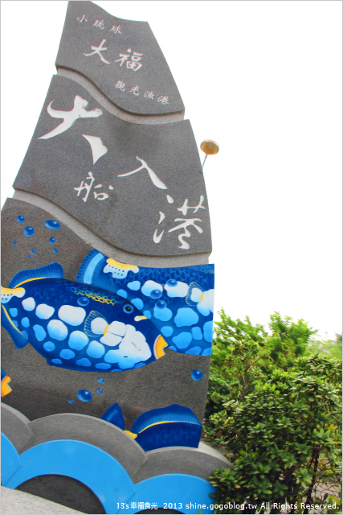

3.大福漁港
大福漁港為小琉球的第二漁港 民國68年闢建，當時為暫緩白沙港的船隻量 提供漁船休息避風用地，故增建本港作為白沙尾港的輔助港 本港主要為遠洋漁船及公營交通船停舶地點 漁村風味濃厚
這裡依舊保存著古樸漁村面貌
或許是假日關係吧，讓原本該是熱鬧的漁港寧靜了 只看得見各式船隻，這裡卻沒半個人 喜歡這樣簡單的寧靜，也多了另一個對小琉球的印象感受 如果你也愛這般海島的漁村情懷 那一定要來大福漁港走走

連到首頁
連到第2頁
連到第4頁